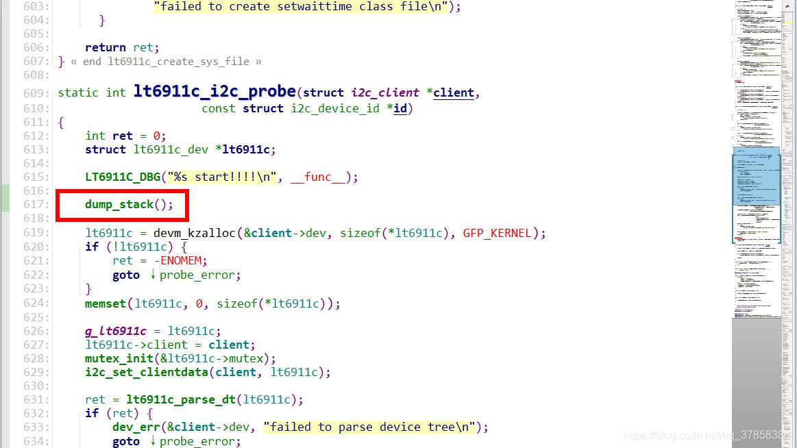
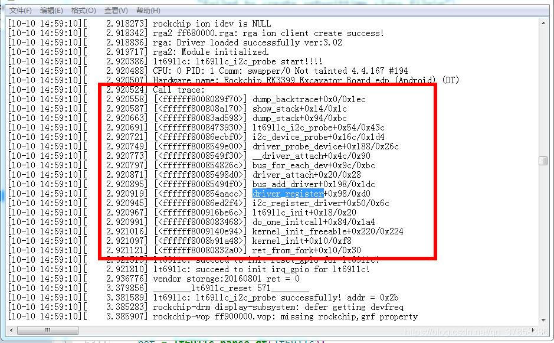

README
以高通平台为例，分析一下Pinctrl 子系统，有助于dts gpio配置理解。
参考
涉及文件：
Linux 4.x内核文档
Documentation\pinctrl.txt
Documentation\devicetree\bindings\pinctrl\pinctrl-bindings.txt
驱动：
UM.9.15/kernel/msm-4.19/drivers/pinctrl/qcom
├── Kconfig
├── Makefile
├── pinctrl-apq8064.c
├── pinctrl-apq8084.c
├── pinctrl-bengal.c
├── pinctrl-ipq4019.c
├── pinctrl-ipq8064.c
├── pinctrl-ipq8074.c
├── pinctrl-khaje.c
├── pinctrl-kona.c
├── pinctrl-lagoon.c
├── pinctrl-lito.c
├── pinctrl-mdm9615.c
├── pinctrl-msm8660.c
├── pinctrl-msm8916.c
├── pinctrl-msm8917.c
├── pinctrl-msm8937.c
├── pinctrl-msm8960.c
├── pinctrl-msm8994.c
├── pinctrl-msm8996.c
├── pinctrl-msm8998.c
├── pinctrl-msm8x74.c
├── pinctrl-msm.c
├── pinctrl-msm.h
├── pinctrl-qdf2xxx.c
├── pinctrl-scuba.c
├── pinctrl-spmi-gpio.c
├── pinctrl-spmi-mpp.c
├── pinctrl-ssbi-gpio.c
cfg:
wugn@jcrj-tf-compile:configs$ ack PINCTRL vendor/bengal-perf_defconfig
CONFIG_PINCTRL_QCOM_SPMI_PMIC=y
CONFIG_PINCTRL_BENGAL=y
CONFIG_PINCTRL_KHAJE=y
CONFIG_PINCTRL_SCUBA=y
dts:
khaje-pinctrl.dtsi
bengal-pinctrl.dtsi
scuba-pinctrl.dtsi
CONFIG_PINCTRL_QCOM_SPMI_PMIC表示pmic的pinctrl，对应关系如下：
Makefile
20:obj-$(CONFIG_PINCTRL_QCOM_SPMI_PMIC) += pinctrl-spmi-gpio.o
pm2250_gpios: pinctrl@c000 {
compatible = "qcom,spmi-gpio";
reg = <0xc000 0xa00>;
interrupts = <0x0 0xc0 0 IRQ_TYPE_NONE>,
<0x0 0xc1 0 IRQ_TYPE_NONE>,
<0x0 0xc2 0 IRQ_TYPE_NONE>,
<0x0 0xc3 0 IRQ_TYPE_NONE>,
<0x0 0xc4 0 IRQ_TYPE_NONE>,
<0x0 0xc5 0 IRQ_TYPE_NONE>,
<0x0 0xc6 0 IRQ_TYPE_NONE>,
<0x0 0xc7 0 IRQ_TYPE_NONE>,
<0x0 0xc8 0 IRQ_TYPE_NONE>,
<0x0 0xc9 0 IRQ_TYPE_NONE>;
interrupt-names = "pm2250_gpio1", "pm2250_gpio2",
"pm2250_gpio3", "pm2250_gpio4",
"pm2250_gpio5", "pm2250_gpio6",
"pm2250_gpio7", "pm2250_gpio8",
"pm2250_gpio9", "pm2250_gpio10";
gpio-controller;
#gpio-cells = <2>;
};
作用
记住pinctrl的三大作用，有助于理解所涉及的数据结构：
引脚枚举与命名(Enumerating and naming)
引脚复用(Multiplexing)：比如用作GPIO、I2C或其他功能
引脚配置(Configuration)：比如上拉、下来、open drain、驱动强度等
自动设置Pinctrl的默认配置
GPIO的MUX的功能，qcom平台针对default的状态是不需要在Driver中去配置，而是由平台统一的实现了，不需要driver另外去设置（如下面实例）。

只需要如上的配置就可以选择复用pin的功能了，驱动中我们完全不用再去管了。既然驱动中没有去做配置，那么平台是在哪个地方完成的呢？其实就是在设备和驱动Match成功后，在触发probe之前。
分析一下实现流程，在driver 的probe函数里面添加dump_stack()打印堆栈信息。

查看打印信息

分析上面的堆栈log，可以理清大概的调用流程 driver_probe_device->really_probe->pinctrl_bind_pins->pinctrl_lookup_state，如果init状态存在则初始化为init，否则初始化为default。
实例
default实例
default实例不需要驱动配置，在probe中自动配置。
scuba-pinctrl.dtsi:
&soc {
tlmm: pinctrl@500000 {
/* mp2721 irq pins mappings */
mp2721_pins: mp2721_pins {
charge_interrupt_pincfg: charge_interrupt_pincfg {
mux {
pins = "gpio86";
function = "gpio";
};
config {
pins = "gpio86";
drive-strength = <2>;
bias-pull-up;
input-enable;
};
};
};
};
a6650-scuba-iot-idp-overlay.dts:
mp2721@3f {
compatible = "pax,mp2721";
reg = <0x3f>;
pinctrl-names = "default";
pinctrl-0 = <&charge_interrupt_pincfg>;
};
自行配置实例
首先介绍一下API：
PinctrlAPI
structpinctrl *devm_pinctrl_get(struct device *dev);
获取该device对应的pinctrlhandler。
structpinctrl_state *pinctrl_lookup_state(struct pinctrl *p,const char*name);
查找name指定的pinctrlstate。
intpinctrl_select_state(struct pinctrl *p, struct pinctrl_state*state);
配置pin脚为指定的state。
下面举例配置tp的中断脚在休眠的时候关闭，唤醒时拉高。
1）在msm8916-pinctrl.dtsi中定义pinctrlinfo：
&soc{
tlmm_pinmux:pinctrl@1000000
gt9xx_int_pin{
qcom,pins= <&gp 13>;
qcom,num-grp-pins= <1>;
qcom,pin-func= <0>;
label= "gt9xx_int_pin";
gt9xx_int_active:active {
drive-strength= <2>;
bias-pull-up;
};
gt9xx_int_sleep:sleep {
drive-strength= <2>;
bias-disable;
};
};
}
2）在msm8916-cdp.dtsi中tp的节点中添加引用：
goodix@5d{
compatible= "goodix,gt9xx";
reg= <0x5d>;
pinctrl-names= "gt9xx_int_active","gt9xx_int_suspend";
pinctrl-0= <>9xx_int_active>;
pinctrl-1= <>9xx_int_sleep>;
interrupt-parent= <&msm_gpio>;
interrupts= <13 0x2>;
……
}
3）在tp驱动中添加配置。
a.定义pinctrl_info：
#define GOODIX_PINCTRL_STATE_SLEEP "gt9xx_int_suspend"
#define GOODIX_PINCTRL_STATE_DEFAULT "gt9xx_int_active"
struct gtp_pinctrl_info{
structpinctrl *pinctrl;
structpinctrl_state *gpio_state_active;
structpinctrl_state *gpio_state_suspend;
};
staticstruct gtp_pinctrl_info gt9xx_pctrl;
staticint gtp_pinctrl_init(struct device *dev)
{
gt9xx_pctrl.pinctrl= devm_pinctrl_get(dev);
if(IS_ERR_OR_NULL(gt9xx_pctrl.pinctrl)) {
pr_err("%s:%dGetting pinctrl handle failed\n",
__func__,__LINE__);
return-EINVAL;
}
gt9xx_pctrl.gpio_state_active= pinctrl_lookup_state(
gt9xx_pctrl.pinctrl,
GOODIX_PINCTRL_STATE_DEFAULT);
if(IS_ERR_OR_NULL(gt9xx_pctrl.gpio_state_active)) {
pr_err("%s:�ailed to get the active state pinctrl handle\n",
__func__,__LINE__);
return-EINVAL;
}
gt9xx_pctrl.gpio_state_suspend= pinctrl_lookup_state(
gt9xx_pctrl.pinctrl,
GOODIX_PINCTRL_STATE_SLEEP);
if(IS_ERR_OR_NULL(gt9xx_pctrl.gpio_state_suspend)) {
pr_err("%s:�ailed to get the suspend state pinctrl handle\n",
__func__,__LINE__);
return-EINVAL;
}
return0;
}
b.在probe函数中初始化pinctrl_info，并设置state：
staticint goodix_ts_probe(struct i2c_client *client, conststructi2c_device_id *id)
{
goodix_parse_dt(&client->dev,pdata);
gtp_request_io_port(ts);
gtp_pinctrl_init(&ts->client->dev);
pinctrl_select_state(gt9xx_pctrl.pinctrl,gt9xx_pctrl.gpio_state_active);
……
}
c.在suspend()和resume()中分别设置为activestate和suspendstate：
staticint goodix_ts_suspend(struct device *dev)
{
structgoodix_ts_data *ts = dev_get_drvdata(dev);
intret = 0, i;
ret= pinctrl_select_state(gt9xx_pctrl.pinctrl,gt9xx_pctrl.gpio_state_suspend);
if(ret)
pr_err("%s:�annot set pin to suspend state", __func__,__LINE__);
……
if(ts->use_irq)
gtp_irq_disable(ts);
……
returnret;
}
staticint goodix_ts_resume(struct device *dev)
{
structgoodix_ts_data *ts = dev_get_drvdata(dev);
intret = 0;
ret= pinctrl_select_state(gt9xx_pctrl.pinctrl,gt9xx_pctrl.gpio_state_active);
if(ret)
pr_err("%s:�annot set pin to suspend state",
__func__,__LINE__);
……
if(ts->use_irq)
gtp_irq_enable(ts);
……
returnret;
}